📰 Articles
The stories behind the recipes — newest first.
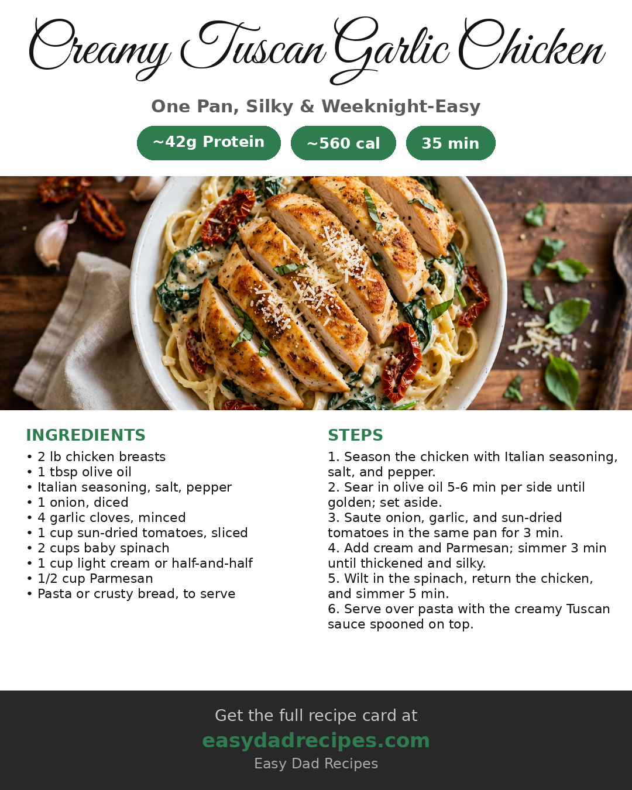
Creamy Tuscan Garlic Chicken: One Pan, 42g of Protein, and a Sauce Worth Spooning Over Everything
One-pan creamy Tuscan garlic chicken with sun-dried tomatoes and spinach, served over pasta — 42g of protein in 35 minutes.
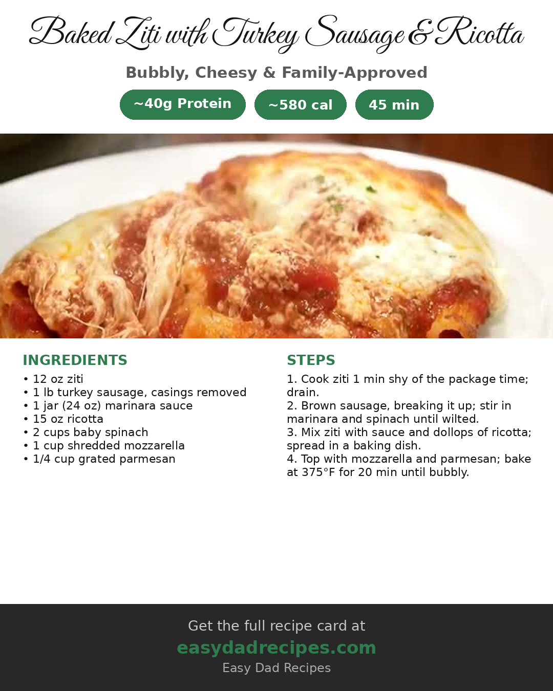
Baked Ziti with Turkey Sausage & Ricotta
Bubbly baked ziti with savory turkey sausage, marinara, and creamy ricotta dollops under a golden mozzarella top — about 40 grams of protein per serving.
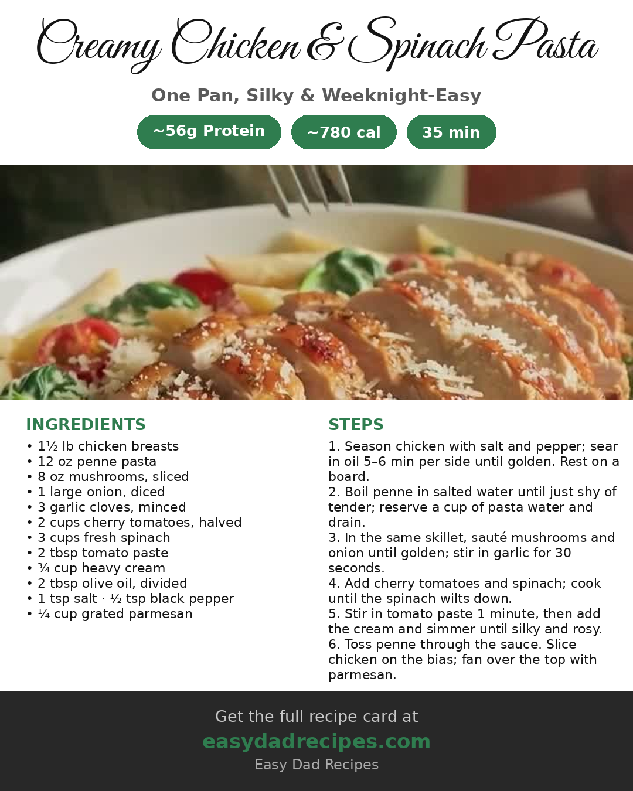
Creamy Chicken & Spinach Pasta
Golden seared chicken over penne in a silky tomato-cream sauce with mushrooms, cherry tomatoes, and spinach — one skillet, about 56 grams of protein per serving.
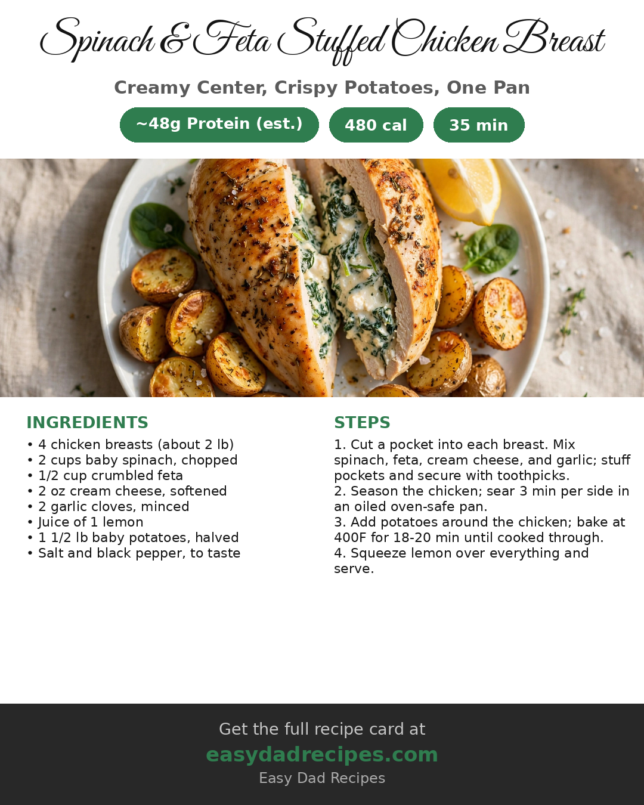
Spinach & Feta Stuffed Chicken Breast: 48 Grams of Protein in One Skillet Dinner
A creamy spinach-feta center, baby potatoes roasting in the same pan, and about 48 grams of protein — one skillet dinner in 35 minutes.
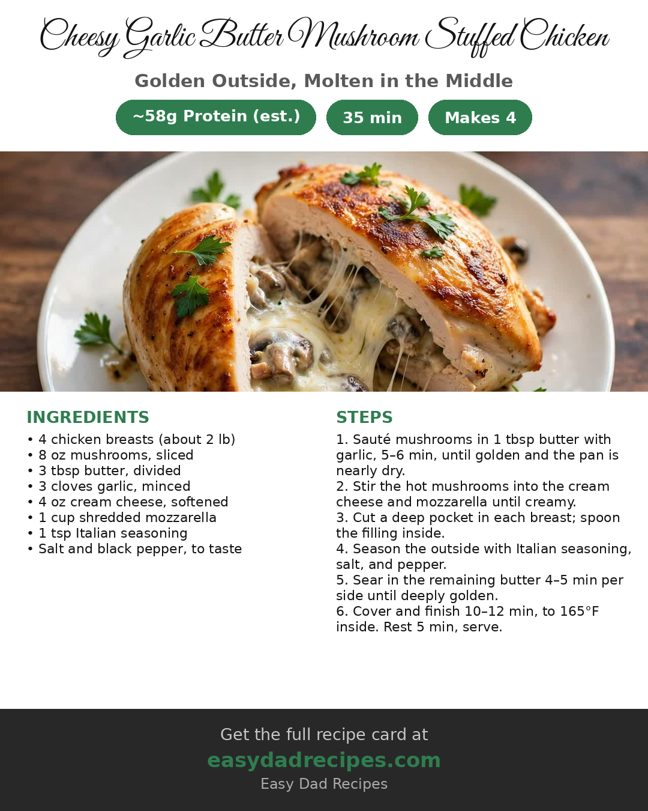
Cheesy Garlic Butter Mushroom Stuffed Chicken: Golden Outside, Molten in the Middle
Chicken breasts stuffed with garlicky mushrooms, cream cheese, and mozzarella, seared golden in butter — around 58 grams of protein a serving, and cheesy in every bite.
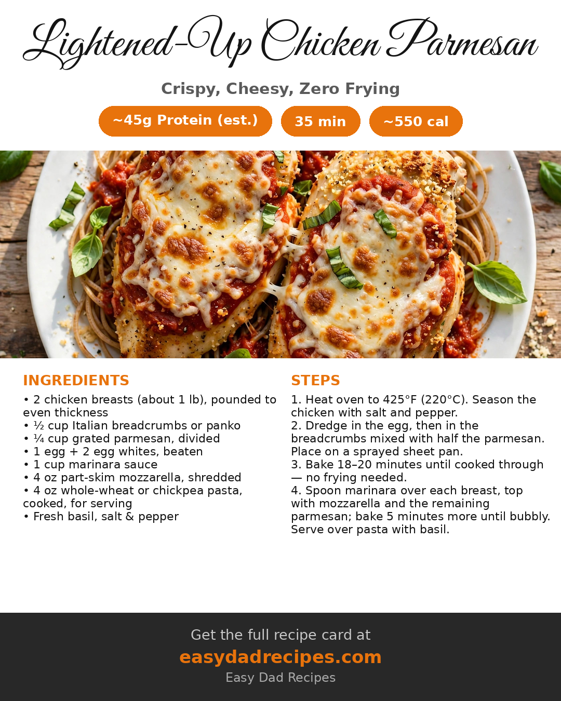
Lightened-Up Chicken Parmesan: The Crispy 45g-Protein Classic Without the Fryer
Parmesan goes right in the breadcrumb crust and the oven does the rest — crispy chicken parm with 45 grams of protein, zero frying, in 35 minutes.
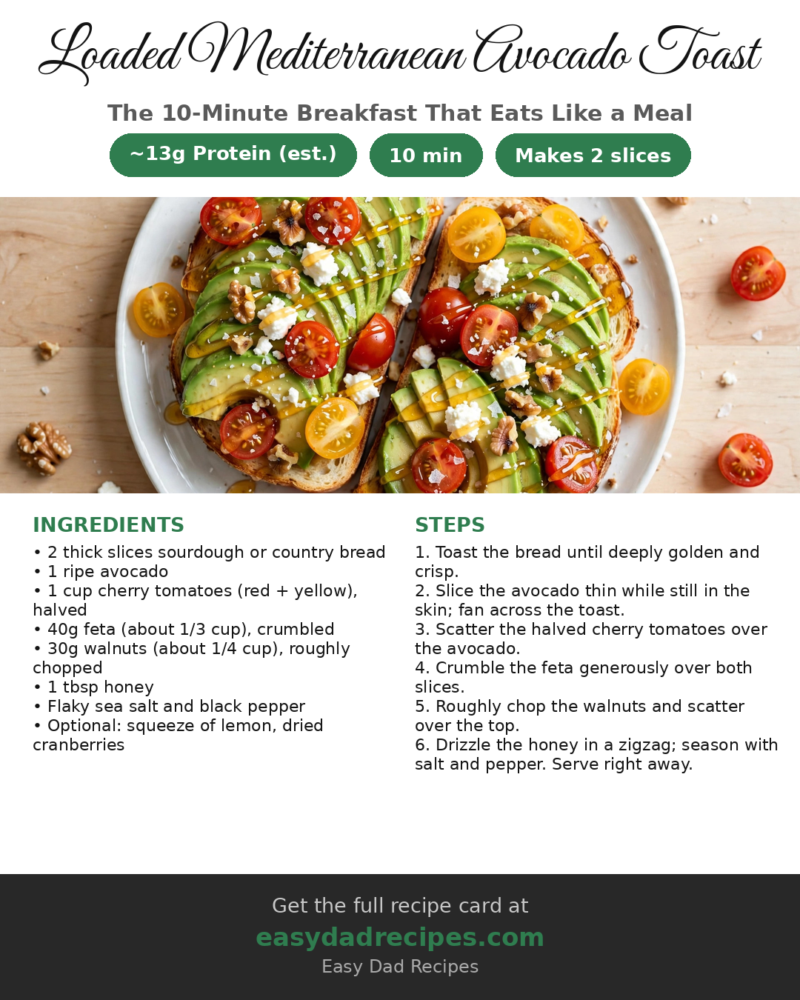
Loaded Mediterranean Avocado Toast: The 10-Minute Breakfast That Eats Like a Meal
Thick golden sourdough, fanned avocado, cherry tomatoes, salty feta, crunchy walnuts, and a zigzag of honey — the sweet-savory breakfast that eats like a real meal, in ten minutes.
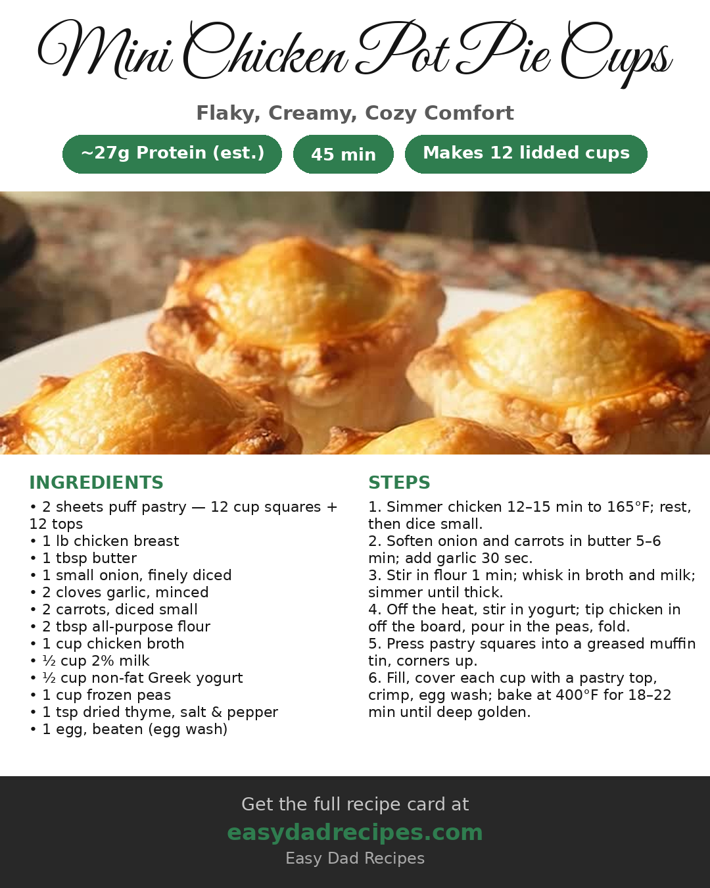
Mini Chicken Pot Pie Cups: Flaky, Creamy, Cozy
Flaky puff-pastry cups loaded with tender chicken, carrots, and peas in a creamy Greek-yogurt sauce — all the pot pie comfort, around 27 grams of protein a serving.
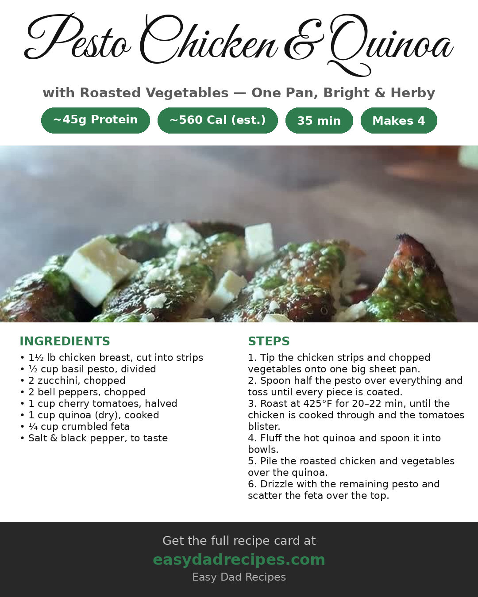
Pesto Chicken with Roasted Vegetables & Quinoa: The One-Pan 45g-Protein Friday Dinner
Everything roasts on one sheet pan — pesto chicken strips, zucchini, peppers, and blistered tomatoes over fluffy quinoa with a feta finish. 45 grams of protein in about 35 minutes.
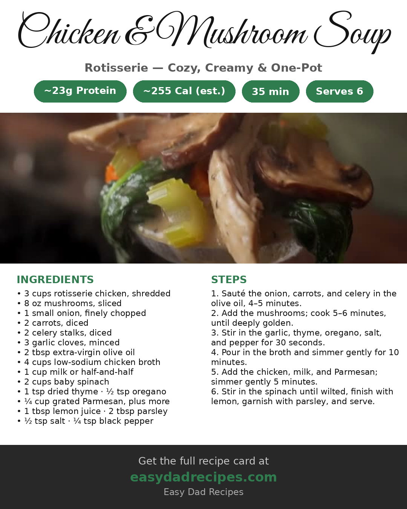
Rotisserie Chicken & Mushroom Soup
A cozy one-pot soup that turns a store-bought rotisserie chicken into a creamy, mushroom-loaded dinner in about thirty-five minutes.
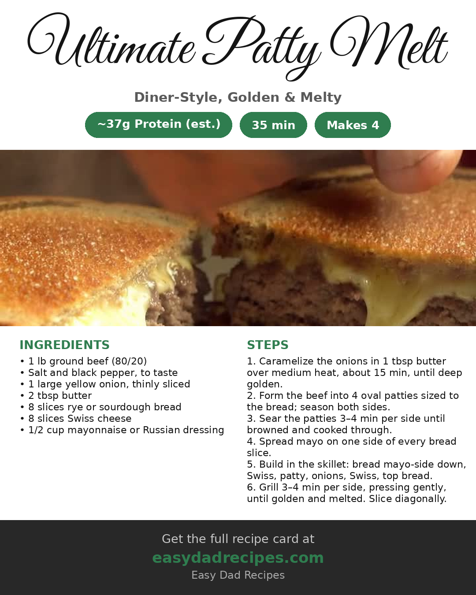
Ultimate Patty Melt: The Diner Classic, Built Like a High-Protein Dinner
A seasoned beef patty, jammy caramelized onions, and double Swiss grilled golden on rye — the lunch-counter classic at about 37 grams of protein a sandwich.

Chicken Tikka Masala: 42 Grams of Protein, Zero Takeout Guilt
Takeout taste, 42g protein — this light chicken tikka masala uses Greek yogurt and light coconut milk for a creamy sauce without the heavy cream.

Crispy Beef Tacos With Avocado Crema: Taco Night Gets 32 Grams of Protein
Crispy Beef Tacos with Avocado Crema -- seasoned beef folded into flour tortillas, pan-fried until crisp, with a cool avocado-lime crema. About 32 grams of protein in a two-taco serving, in about 25 minutes.

Jack-O'-Lantern Stuffed Peppers: Halloween Dinner With 30 Grams of Protein
Stuffed peppers carved like jack-o'-lanterns — smoky chili-cumin rice, black beans, corn and spinach, with a pound of ground beef for about 30 grams of protein a pepper.

Pasta Fagioli: The Olive Garden Copycat
The Olive Garden copycat in the Instant Pot: Italian sausage, two kinds of beans, and ditalini in a seasoned tomato broth — about 30 minutes, one pot.

Shrimp Fajita Bowls: 40g of Protein in a Sizzling 20-Minute Skillet
Smoky charred peppers, snappy shrimp, and a big squeeze of lime — roughly 40 grams of protein in a 20-minute skillet dinner.

Chicken Shawarma Bowls: Charred Chicken, Creamy Garlic Sauce, 42g Protein
Charred shawarma, creamy garlic yogurt sauce, 42g protein — dinner in 30 minutes.

High-Protein Street Corn Dip: Game-Day Flavor, Real Protein
Street corn dip with real protein — charred corn, silky blended cottage cheese, cotija, jalapeño, Elote seasoning, and Tajín. 15 minutes, game-day ready.

Italian Sausage Gnocchi Soup: The 12M-View Cozy Bowl
Pillowy gnocchi, browned Italian sausage, and a broth so creamy it should be illegal — all in one pot.

Korean BBQ Chicken Wraps: Ten Meals, One Sheet Pan
Ten meals, one sheet pan — 39g protein per wrap, done in about 30 minutes.

Greek Chicken & Rice Bowls: The 52g-Protein Bowl That Tastes Like Vacation
Charred lemon-oregano chicken, crunchy salad, cool tzatziki — 52 grams of protein in a bowl that tastes like vacation.

Honey-Glazed Salmon Bowls: Better Than Takeout
Takeout flavor, weeknight effort. Crispy caramelized salmon, cool cucumber, a spicy drizzle — 35 grams of protein in 25 minutes, all in one bowl.

Smashed Beef Kabob with Cucumber Yogurt: Crispy, Cool, 25 Minutes
Crispy smashed beef over cool cucumber yogurt — 29g protein, 25 minutes, one skillet.

Turkey Taco Sweet Potato Bowls: Taco Night in a Sweet Potato
Taco night just got a sweet potato upgrade. Fifty-seven grams of protein, a chipotle drizzle you will want on everything, and one bowl that handles dinner.

Creamy Lemon Pasta with Shrimp: The 25-Minute Pasta That Doesn't Weigh You Down
Creamy pasta without the food coma.

15 Bean Soup with Collard Greens & Smoked Turkey: The Slow Cooker Does All the Work
Soup season is here, and this is the one that eats like a Sunday dinner.

Honey Garlic Chicken Stir-Fry: 60g Protein, One Pan, 30 Minutes
One pan, a glaze that does all the heavy lifting, and 60 grams of protein without a single supplement scoop.

Loaded Baked Sweet Potato: The Post-Gym Meal That Actually Fills You Up
Chicken and rice. Again. If your post-gym meal feels like a punishment, this one's for you.

Bang Bang Salmon: The 20-Minute Dinner That Actually Gets Eaten
Salmon used to be the dinner my family pushed around the plate. Not anymore.

Blackened Tilapia Tacos with Mango Slaw: Taco Night, Upgraded
Taco night just got an upgrade. Crispy blackened fish, sweet mango slaw, cool crema — 36 grams of protein and zero boring bites.